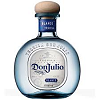
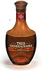
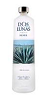
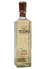
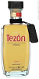

Some Pretty Good Tequilas

This is a look at some pretty good tequilas. They aren't top=shelf so they won't
break the bank. But they aren't bottom-of-the barrel either, not the kind of spirit you'd
want to slam down quickly with a quick squirt of lime and a liick of salt. You want to sip
these, relishing the flavor as they pass over your tongue, then feel the gentle warmth as they
pass down your throat. We looked for tequilas between $30 and $50. Again, not cheap but they
won't break the bank if you enjoy them sparingly and don't waste them.
Our sampling will include a couple from each of the following types: Blanco (or silver), reposado,
and añejo. In general these types refer to how long the tequila was aged as follows:
| Blanco | Little or no aging. |
|---|
| Reposado | 2 to 12 months. |
|---|
| Añejo | 1-plus years. |
|---|
Don Julio Blanco

A thick, lightly sweet blanco from the Don Julio
line, established in 1942 by Don Julio Gonzalez at the ripe old age of 17.
- Distiller: Tequila Don Julio, S.A. de C.V.
- Location: Atotonilco, Jalisco, MX
- Type: Blanco
- Ace Spirits Price: $ 49.99
Casa Noble Reposado
A smooth and full bodied tequila, Casa Noble Reposado is aged for 364 days
in French white oak barrels. It has a moderate level of sweetness and a hot
finish.
- Distiller: La Cofradia, S.A. de C.V.
- Location: Tequila, Jalisco, MX
- Type: Reposado
- Ace Spirits Price: $ 59.99
Suaza Tres Generaciones Añejo
Tres Generaciones Añejo has a delicate
amber hue owing to it's more than three years of aging. It has a smoky, smooth finish.
- Distiller: Tequila Sauza, S.A. de C.V.
- Origin: Tequila, Jalisco, MX
- Type: Añejo
- Ace Spirits Price: $ 49.99
Dos Lunas Silver

With more complexities than most blancos, Dos Lunas Silver has a lush herbal
aroma and a medium body. At the end of each sip you'll enjoy a peppery finish.
- Distiller: Tequila del Señor, S.A. de C.V.
- Location: Guadalajara, Jalaisco, MX
- Type: Blanco
- Total Wine Price: $35.99
El Tesoro de Don Felipe Reposado

El Tesoro Reposado is rich and mellow. Aged for eight to eleven months, it is
a well-rested reposado.
- Distiller: Tequila Tapatio, S.A. de C.V.
- Location: Arandas, Jalisco, MX
- Type: Reposado
- Ace Spirits Price: $ 44.99
Olmeca Tezón Añejo

Tezón's Añejo has an amber color and rich flavor. It is produced using a Tahona,
an ancient volcanic millstonne.
- Distiller: Hacienda de Oro, S.A. de C.V.
- Location: Arandas, Jalisco, MX
- Type: Añejo
- Ramirez Liquor Price: $ 53.99